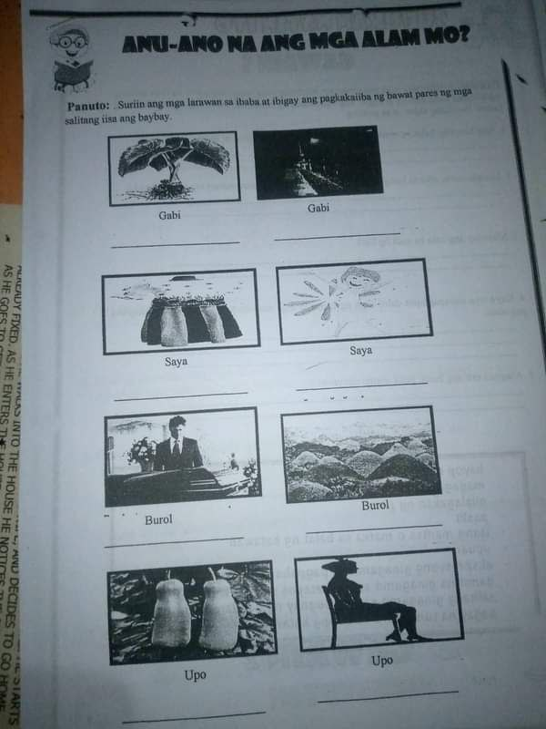
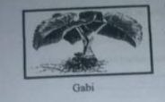
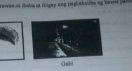
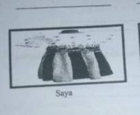
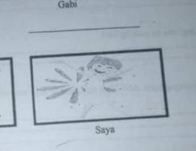
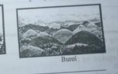
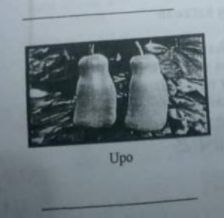
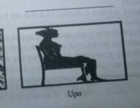

GABI

Ang unang larawan ay gabi na pedeng makain.
GABI

Ang pangalawang larawan naman ay isang uri ng panahon kung saan ay sumasapit tuwing gabi pag 6pm na
Saya

Ang saya sa unang larawan ay ang mga damit nung unang panahon na ginagamit parang sa maria clara at ibara ang style
Saya

ang isa naman na saya ay isang emosyon na nararamdaman ng mga tao
Burol
Ang unang larawan ay ang burol ng isang namatay na tao
Burol

Ang isang burol naman na ito ay ang isang tanawin or bundok sa probinsiya
Upo

Ang upo naman na ito tulad ng gabi ay isang gulay na pede makain
Upo

ito naman ay isang gawain ng mga tao na nakasanayan natin sa araw araw ang pagupo sa upuan